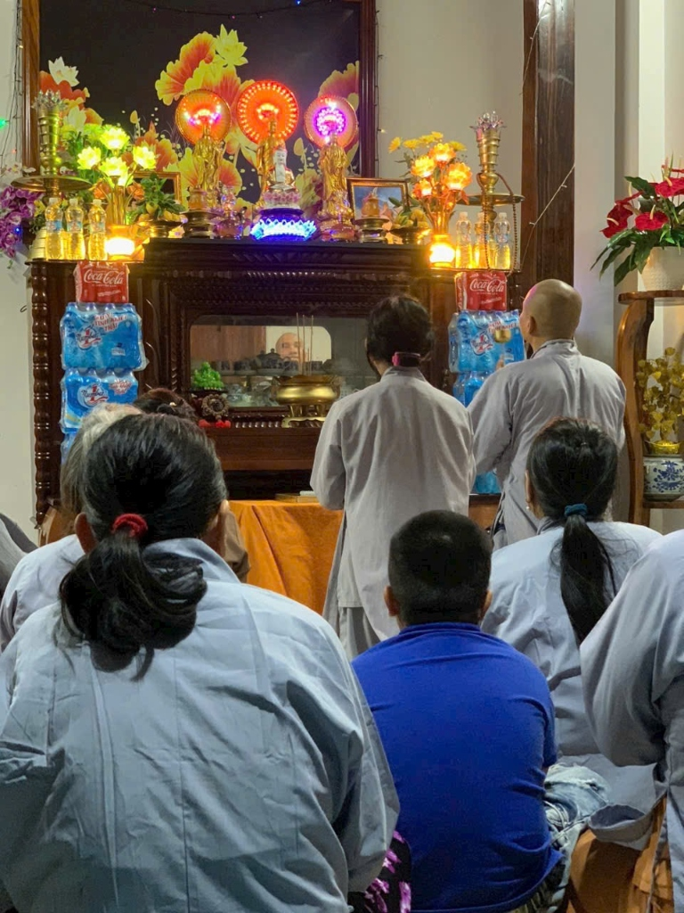

Nam Mô A Di Đà Phật (Giọng tụng chậm - Trang nghiêm)
Danh sách bài niệm
"Nguyện đem công đức này • Hướng về khắp tất cả • Đệ tử và chúng sanh • Đều trọn thành Phật đạo."
TRÀ ĐẠO THƯ QUÁN & HÒA ÂM NGŨ CUNG RU NGỦ
Hương trà thanh khiết • Tiếng đàn du dương • Lòng an tịnh dễ vào giấc ngủ sâu
Đàn Tranh Ru Ngủ
Tiếng tơ mộc ngũ cung thanh thản
Nước Rót Chén Trà
Tiếng nước sôi reo tí tách bên bàn
Mưa Rơi Bên Mái Trúc
Mưa rào Tuy Hòa rả rích đưa êm
Gió Thoảng Rừng Tre
Tiếng sậy xào xạc trong đêm trăng
Thiền Thở Đóa Sen (Phương Pháp 4-7-8)
Hít vào 4 giây • Nín thở 7 giây • Thở ra từ tốn 8 giây giúp thư giãn hệ thần kinh.
Chuỗi Tràng Hạt Bồ Đề 108 Hạt
Mỗi lần chạm hạt là một lời chúc an lành. Điện thoại sẽ rung nhẹ tạo cảm giác như lần tràng hạt thật.
“Tháng Mười mây phủ sườn Tây / Sông Ba réo rắt vơi đầy xót xa... Trổ con Nhì Nghèo!”
“Sáng nay ra rẫy gió thổi mát rượi, trưa về ghé quán bà Năm làm tô bánh canh hẹ thơm nức mũi, cả ngày hanh thông vui vẻ!”
Lời khuyên: Cười nhiều một chút cho trẻ lâu!